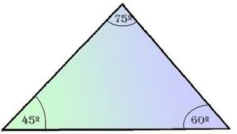

Los triangulos acutangulos son aquellos cuyos tres angulos internos son angulos agudos; es decir, la medida de cada uno de esos angulos es menor a 90° grados. Al no tener ningun angulo recto, tenemos que el teorema de Pitagoras no se cumple para esta figura geometrica.